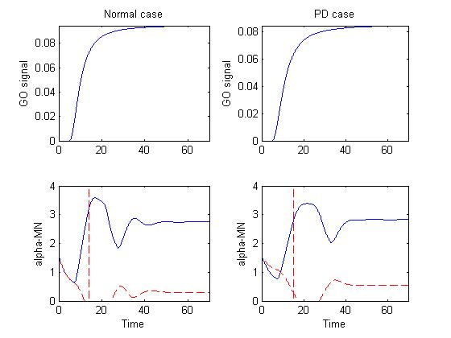
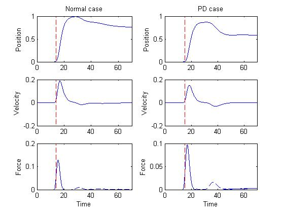
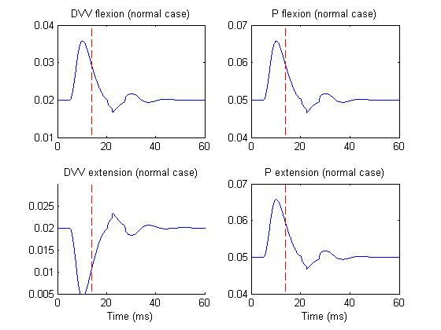
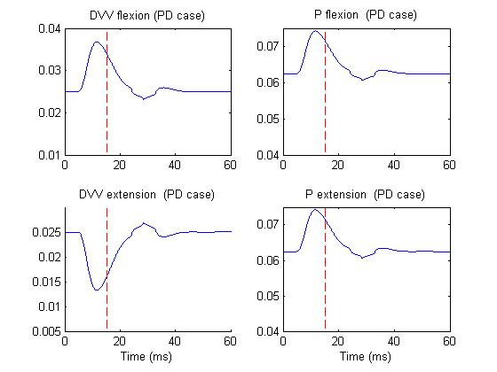

A neural model of neuromodulatory (dopamine) control of arm movements
in Parkinson's disease (PD) bradykinesia was recently introduced [1,
2]. The model is multi-modular consisting of a basal ganglia module
capable of selecting the most appropriate motor command in a given
context, a cortical module for coordinating and executing the final
motor commands, and a spino-musculo-skeletal module for guiding the
arm to its final target and providing proprioceptive (feedback) input
of the current state of the muscle and arm to higher cortical and
lower spinal centers.
The neuromodulatory model is successful at offering an alternative
explanation to what other models suggest about the causes of
Parkinson's disease bradykinesia. More specifically, it focuses more
on the effects of dopamine (DA) depletion in cortex and spinal cord
and less on its effects in basal ganglia (as other models have
done).
The neuromodulatory model provides a unified theoretical framework for
PD bradykinesia and it is capable of producing a wealth of neuronal,
electromyographic and behavioral movement empirical findings such
as:
-
Increased cellular reaction time
- Prolonged behavior reaction time
- Increased duration of neuronal discharge in area 4 preceding and
following onset of movement
- Reduction of firing intensity and firing rate of cells in primary
motor cortex
- Abnormal oscillatory GPi response
- Disinhibition of reciprocally tuned cells
- Increases in baseline activity
- Repetitive bursts of muscle activation
- Prolongation of premotor and electromechanical delay times
- Reduction in the size and rate of development of the first agonist
burst of EMG activity
- Asymmetric increase in the time-to-peak and deceleration time
- Decrease in the peak value of the velocity trace
- Increase in movement duration
- Substantial reduction in the size and rate of development of
muscle production
- Movement variability
Recently the model of PD bradykinesia [1, 2] was extended in two ways:
(1) Incorporated the spindle feedback not only in the spinal cord as
in [1, 2], but also in cortex and examined its effects on the
activities of specific types of cells found in primary motor cortex
both in normal and in DA depleted cases, and (2) Examined the effects
of DA depletion not only in alpha motoneuronal (MN) and Renshaw
activities as in [1, 2], but also in the activities of type Ia and Ib
inhibitory interneurons (IN) and primary spindles, in order to
inverstigate whether abnormal reciprocal inhibition of spinal IaINs
plays a significant role in PD rigidity.
The new model [3] predicted that the reduced reciprocal disynaptic Ia
inhibition in the DA depleted case doesn't lead to the co-contraction
of antagonist motor units. Furthermore, the model predicted that
although the co-contraction of antagonist muscles might be a mechanism
for PD rigidity, the co-contraction isn't due to abnormal reciprocal
inhibition at the spinal level. The causes of MN co-contraction ought
to be searched more centrally, potentially in the microcircuit of the
motor cortex and/or the basal ganglia.
References:
[1] V. Cutsuridis, S. Perantonis (2006) A Neural Model of Parkinson's
Disease Bradykinesia. Neural Networks 19(4): 354-374
[2] V. Cutsuridis (2006) Neural Model of Dopaminergic Control of Arm
Movements in Parkinson's Disease Bradykinesia. In: Artificial Neural
Networks - ICANN 2006, Lecture Notes in Computer Science, LNCS 4131
(Springer-Verlag, Berlin) 583-591
[3] V. Cutsuridis (2007) Does Abnormal Spinal Reciprocal Inhibition
Lead to Co-contraction of Antagonist Motor Units? A Modeling
Study. International Journal of Neural Systems, in press
Model usage:
Extract the folders in this archive, start matlab, add the
Cutsuridis_PDmodel folder to the path,and run main.m
This will generate a few figures associated with the
publications:

Figure 1 depicts the basal ganglia-thalamus output (GO signal) that
drives the motor cortical cells in the model and alpha-MN activity in
both normal and PD cases.

Figure 2 depicts the position, velocity and force curves in both
normal and PD cases.

Figure 3 depicts the DVV and P activities of M1 cells in normal case,
whereas

Figure 4 depicts the same activities but in PD case.
This version of the files is June 28, 2007 supplied by Vassilis Cutsuridis.